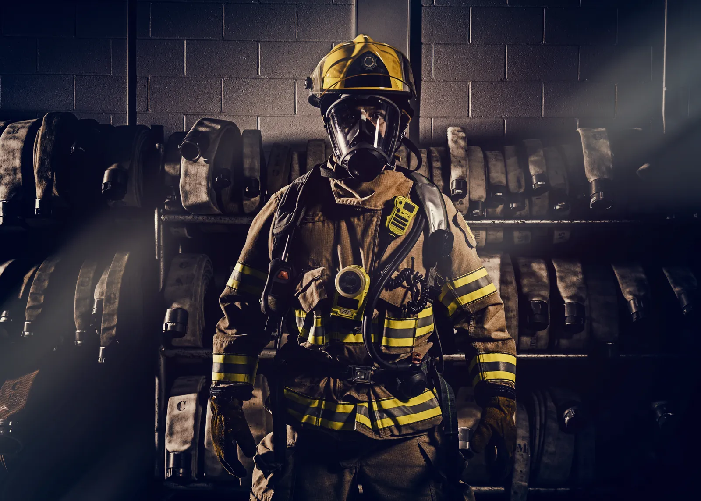
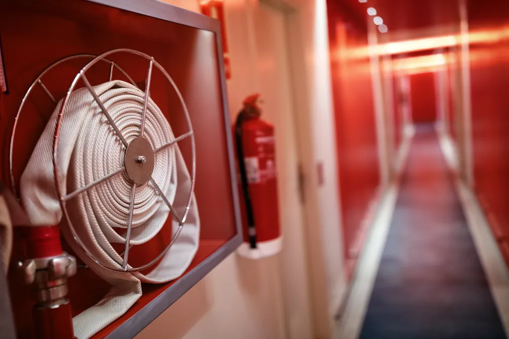

Sprzęt dla strażaków, szyty przez strażaków
Naszywki rozpoznawcze, uchwyty, oznaczenia RIT i szelki do ubrania specjalnego. Każdy produkt projektujemy i szyjemy sami, w Polsce, a przed sprzedażą testujemy w działaniach.
Przejdź do sklepuCzego szukasz?
Wszystko, co szyjemy, jest sprawdzone w akcji: od naszywki z nazwiskiem po kieszeń na pętlę ratowniczą.


Sklep
Produkty szyte na zamówienie mają podany czas realizacji na karcie produktu. Większe zamówienia dla jednostek wyceniamy indywidualnie.
Dla jednostek OSP i PSP
Logo Waszej jednostki na naszywkach, odzieży i wozach. Raz przygotowany i zaakceptowany projekt hafciarski przechowujemy na stałe, więc każda kolejna partia wygląda tak samo.
- Projekt logo w formie grafiki wektorowej, od 300 zł
- Naszywki z logo haftowane lub łączone (nadruk + haft), od 10 sztuk
- Haft i nadruk na odzieży z logo jednostki
- Naklejki odblaskowe i zwykłe na wozy, hełmy i sprzęt, numery operacyjne, korytarz życia


Ochrona przeciwpożarowa dla firm
Przygotujemy i zaktualizujemy dokumentację pożarową obiektu, przeszkolimy pracowników i przeprowadzimy próbną ewakuację.
- Instrukcja bezpieczeństwa pożarowego
- Analiza bezpieczeństwa pożarowego
- Dokument zabezpieczenia przed wybuchem
- Plany ewakuacyjne
- Szkolenia ppoż. pracowników
- Ćwiczenia z próbnej ewakuacji
O nas
Sami jesteśmy strażakami, dlatego wiemy, jak ważna jest prostota, ergonomia i jakość sprzętu.
TCFD Departament Pożarnictwa to firma z Torunia, która od początku do końca tworzy sprzęt i akcesoria dla strażaków. Szyjemy rzeczy, których na rynku brakuje albo które są dostępne tylko w jednym wariancie. Każdy produkt przed sprzedażą testują strażacy z różnych części kraju.
Szyjemy z materiałów sprawdzonych producentów:
Kontakt
- TELEFON
- +48 506 998 605
- biuro@tcfd.pl
- ADRES
- ul. Podgórna 18/3, 87-100 Toruń
- GODZINY PRACY
- poniedziałek - piątek, 8:00-16:00